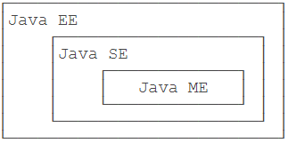
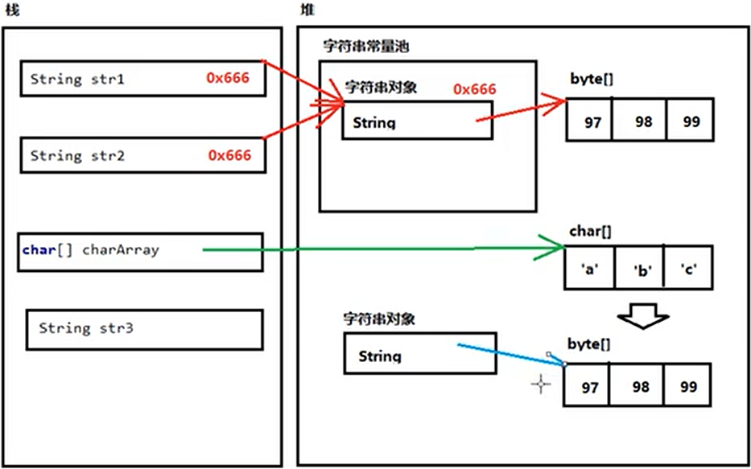
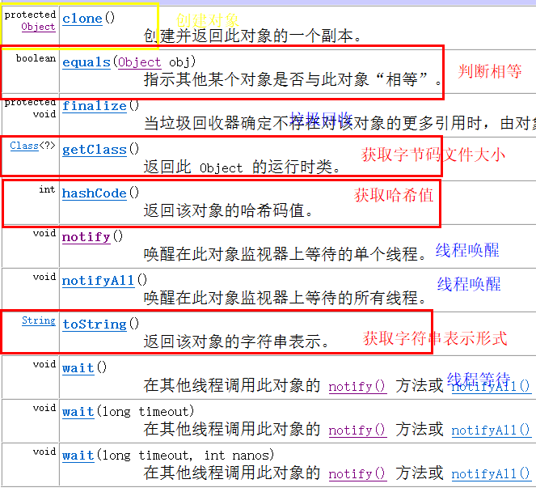
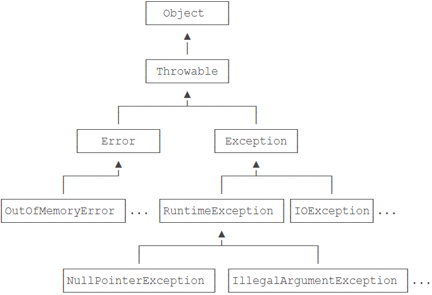
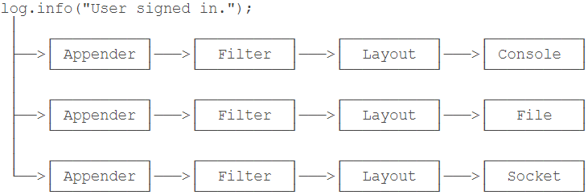
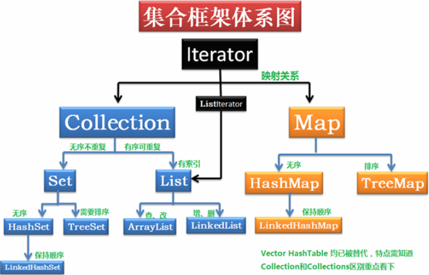
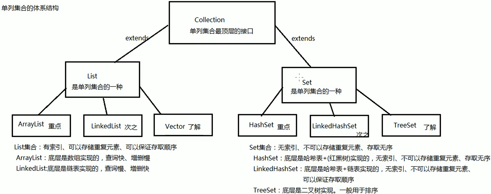
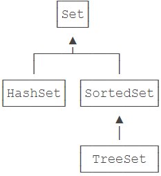

JavaSE笔记
Java学习路线图如下
- 首先要学习Java SE，掌握Java语言本身、Java核心开发技术以及Java标准库的使用；
- 如果继续学习Java EE，那么Spring框架、数据库开发、分布式架构就是需要学习的；
- 如果要学习大数据开发，那么Hadoop、Spark、Flink这些大数据平台就是需要学习的，他们都基于Java或Scala开发；
- 如果想要学习移动开发，那么就深入Android平台，掌握Android App开发。
一、面向对象基础
不同版本的Java

Java SE：标准版，包含标准的JVM和标准库
Java EE：企业版，在SE的基础上加上了大量的API和库
主要针对：web应用、数据库、消息服务等Java ME：针对嵌入式设备的”瘦身版”，SE 标准库无法在ME上使用，ME的虚拟机也是”瘦身版”.
类路径和jar包
classpath的介绍：
classpath是jvm用到的一个环境变量，它用来指示JVM如何搜索class。
classpath就是一组目录的集合，它设置的搜索路径与操作系统有关。classpath的设定方法：
1.在系统环境变量中设置classpath环境变量。
2.在启动JVM时设置classpath变量。（JVM默认的classpath为当前目录）3.JVM不依赖classpath加载核心库
jar包的介绍：
如果项目中包含多个.class文件，散落在各层目录中，可以将目录打一个包，变成一个文件。
jar包的作用就是如此。jar包的概念：
1.jar包实际上就是一个zip格式的压缩文件，而jar包相当于目录。
2.如果要执行一个jar包的class，就可以把jar包放到classpath中。
3.JVM会自动在hello.jar文件里去搜索某个类。创建jar包：
- 在资源管理器中，找到正确的目录，点击右键压缩文件夹，将.zip文件改为.jar文件即可。
（注意：jar包里的第一层目录，不能是bin） - 可以配置/META-INF/MANIFEST.MF纯文本文件，可以指定Main-Class和其他信息。
- 3.jar包还可以包含其他jar包，需要在MANIFEST.MF文件里配置classpath。
- 在资源管理器中，找到正确的目录，点击右键压缩文件夹，将.zip文件改为.jar文件即可。
数据类型
整数类型：byte，short，int，long
浮点数类型：float，double
字符类型：char
布尔类型：boolean
Java是高精度强类型语言
整型表示范围
1 | 1B byte: -128 ~ 127 |
备注：Java中整型默认使用int进行计算
var关键字
这个时候，如果想省略变量类型，可以使用var关键字：
1 | var sb = new StringBuilder(); |
备注：
类型转换
1 | //数据类型精度表：byte-short-(char)int-long-float-double |
不规则数组
1 | /* |
流程控制
输入和输出
Scanner
一个可以解析基本类型和字符串的简单文本扫描器
1
Scanner in = new Scanner(System.in);
备注：System.in系统输入指的是通过键盘录入数据
输入待解决问题：
- Scanner调用Scanner中的hasNextInt()判断获取的输入是否为整型？
System.out.printf
把数据显示成我们期望的格式，就需要使用格式化输出的功能。
1
2
3
4
5
6
7
8public class Main {
public static void main(String[] args) {
double d = 3.1415926;
System.out.printf("%.2f\n", d); // 显示两位小数3.14
System.out.printf("%.4f\n", d); // 显示4位小数3.1416
System.out.printf("%Ns\n",s);//显示N长度的字符串，长度不够截取；长度不足，左对齐；加负号，右对齐。
}
}备注：printf中似乎不可用字符串拼接。
思考：
- 输出指定格式时不可使用字符串拼接？
分支和循环
switch
只适用于穷举法；不使用于范围判断
- switch表达式的数据类型仅限于：int+String+enum
- break的作用是 跳出switch结构
- 没有碰到break语句前，会一直执行分支的语句
for
一般用于指定次数的循环。常用于遍历数组。
1
2
3for(int i=0;i<n;i++){
//循环指定语句
}备注：
while
一般用于位置次数的循环，常用于逻辑判断结束循环。
1
2
3
4
5while(条件语句){
//循环指定语句
}
while((n--)>0){}//循环n次
while((--n)>0){}//循环n-1次备注：
break为跳出当前循环。
continue为跳过本次循环，进入下一次循环，循环体中，continue后面部分的内容就不执行了。
顺序排序&冒泡排序
1 | /*冒泡排序 |
插入排序
1 | /** |
递归
概念：方法自己调用自己
注意事项：
- 方法递归必须有出口；
- 斐波那契数列
1 | 1 1 2 3 5 8 ... |
权限修饰符
修饰符：让被修饰者具有一些本来不具有的特征的关键字
修饰符分类：范围修饰符 静态修饰符 常量修饰符 同步修饰符
- 范围修饰符
| 名称 | 本类 | 本包 | 子类 | 非包 | 范围总结 |
|---|---|---|---|---|---|
| public | √ | √ | √ | √ | 整个项目 |
| protected | √ | √ | √ | × | 本包及其他包子类 |
| 默认范围 | √ | √ | × | × | 本包 |
| private | √ | × | × | × | 本类 |
注：由该类创建出的对象，在该类中可以直接获取类中的私有属性。
final
- 修饰字段值：常量，一旦赋值不可更改、没有默认初始值。
- 修饰方法：不可被重写。
- 修饰类：类不可被继承。
- 修饰引用变量，表示引用不可变，但是引用的内容可变。
- 被final修饰的方法，JVM会尝试将其内联，以提高运行效率。
- 被final修饰的常量，会在编译阶段会存入常量池。
从Java 8+开始，只要局部变量事实不变，那么final关键字可以省略
- static(静态)
- 特点：
- 使用静态修饰的成员不会随对象变化。
- 修饰的成员属于类，所有对象共享使用。
- 静态方法：
- 可以不用实例化，直接调用方法。
- 可以访问静态成员，不可以访问非静态成员。
- 静态方法中不能使用this关键字。
- 静态代码块
- 当第一次用到本类时，静态代码块执行唯一的一次。
- 一般用于类中静态成员的初始值。
- 修饰类(静态类)：
- 全局唯一，任何一次的修改都是全局的影响。
- 只加载一次，优先于非静态。？？？？
- 生命周期属于类级别，从JVM加载开始到JVM御载结束。
- 特点：
abstract(抽象)
修饰对象：类、方法
修饰效果：
抽象方法不能有方法体
抽象方法的类必须是抽象类
抽象类不能创建对象 但是可以定义引用
子类继承抽象类 必须实现所有抽象方法
或者 定义为抽象类
方法
方法是一个实现特定功能的代码块，又名函数。
方法的作用：代码的复用
方法的本质：就是一个功能
参数传递
1 | /* |
- 不定参数(JDK1.8的新特性)
1 | public void method(int... a); |
返回值
1 | 1. return的作用：1 把方法的返回值返回给调用者 2 结束方法 |
方法重载
特点
1 必须是同一个类
2 方法名必须相同
3 方法参数列表必须不同：参数个数不同，参数类型不同，参数顺序不同使用场景
几个功能一致，只是参数列表不同；
功能基本一致，满足不同参数列表的需求；
面向对象思想
类和对象
类可以看做是对象的模板，通过类这个模板，可以创建出无数个对象。
类中拥有的字段值和方法，对象都可以访问。
类中包括的内容：
成员变量——实例化对象可以使用，类不可使用。
成员方法——实例化对象调用，类不可调用。
静态字段——类可以调用，无序实例化。
静态方法——类可以调用，无需实例化对象。
如果一个方法没有涉及实例，尽量成静态方法
内部类
代码块
- 构造代码块：一般用于给对象的实例变量初始化
- 静态代码块：只有在类加载时执行一次，一般用于给类变量初始化
成员变量和局部变量
- 概念解释：
- 相同之处：
- 不同之处：
- 作用域不同：前者在对象中，后者在方法中。
- 默认值：前者有默认值，后者需显式赋值。
- 修饰符：
- 前者：范围修饰 静态修饰 final修饰
- 后者： final修饰
构造方法/构造器
- 构造方法没有返回值，不用void标识
- 构造方法不能被对象调用
对象创建
加载类；
为类创建静态区域，用来记载类的静态成员
执行静态代码块、为静态变量赋值等操作。定义引用；
创建对象：new调用构造器：
内存中划分区域，创建对象。
调用父类构造器，将父类的实例成员加载进子类对象的内存中。
1.构造方法不能加载进对象内存中；
2.创建对象时只加载普通方法的方法声明，不加载方法体：调用时才加载执行调用的父类构造器中的语句。
调用子类构造器，将子类的实例成员加载进子类对象内存中。
隐藏子类对象从父类继承但被重新定义的成员。
执行子类构造器中的语句。
让引用指向此对象
抽象类
使用abstract关键字修饰的类
- 抽象类有构造方法，不是用来创建本类对象，是用来帮助创建子类对象的。
- 抽象类中可以没有抽象方法。
接口
使用Interface关键字声明，与class同级
概念：内部全是抽象方法的抽象类
接口和类不是同一种形态
作用：
- 增加程序的扩展性
- 提高代码的复用性
- 降低模块之间的耦合度
特点：
- 成员变量默认修饰符：public static final
- 没有构造方法，不能创建对象，但是可以引用对象
- 支持多继承，不影响继承直接父类
使用：implements关键字
封装
作用：
- 使外部代码可控制的访问内部的代码。
- 解耦：外部调用不需要知道内部的实现，只提供内部所需的数据等。
实现：
使用范围修饰符限制成员的可见性，设置外部访问的方法接口。
一般使用private关键字，限制只能本类访问
继承
特点
重名问题(向上转型)
变量重名
- 直接通过子类对象访问成员变量：
等号左边是谁，就优先用谁，没有则向上找。 - 间接通过成员方法访问成员变量：
该方法属于谁，就优先用谁，没有则向上找。
- 直接通过子类对象访问成员变量：
方法重名
创建的对象是谁，就优先用谁，如果没有则向上找
局部变量：直接用变量名称
本类变量：this.变量名称
父类变量：super.变量名称
super- 子类构造方法会默认使用
super()调用父类无参构造(隐式) - 若父类没有无参构造，则需要显式调用有参构造
super(参数列表)
- 子类构造方法会默认使用
方法重写
使用new创建的是哪个对象，实际执行时，就调用哪个对象的方法。
(多态)- 子类方法的返回值必须小于等于父类方法的返回值范围
- 子类方法的权限必须大于等于父类方法的权限修饰符
多态
- 概念：相同类型的对象，调用同一方法(参数列表也相同，区别方法重载)，在实际运行时，可能会执行出不同的结果。
- 实现：
- 前提前提条件是继承、重写、向上转型
- 特点：多态特点
- 应用：
- 参数列表类型：传递子类
- 成员变量类型：赋值子类
- 返回值类型：返回子类
- 数组元素类型：存入多种子类对象
向上转型
定义父类引用指向创建的子类对象。
特点：除了重写的方法，其他的和父类对象完全一致
参考：重名问题
向下转型
使用InstanceOf判断转型是否可以成功
工具类
1 | 学习类： |
Math类
1 | static double pow(n1,n2);//返回n1的n2次方 |
System类
1 | static void gc() :启动垃圾回收器 |
Arrays类
1 | static void sort(T[] a,Comparator<? super T> c);//按比较器c对数组a进行排序 |
Objects类
1 | static boolean equals(Object a,Object b); |
Collections类
1 | public static <T extends Comparable<? super T>> |
备注：区别Collection和Collections
常用类
String类
字符串的特点
- 字符串的内容永不可变
- 正是因为字符串不可改变，所以字符串是可以共享使用的
- 字符串效果上相当于是cahr[]字符数组，但是底层原理是byte[]字节数组
字符串常用创建方式：
1
2
3public String();//""
public String(char[] array);//根据字符数组创建字符串
public String(byte[] array);//根据字节数组创建对应字符串- java1.7后，增加了字符串常量池，用于存放不使用new关键字创建的String，池中的字符串可以被多个字符串变量“指向”。
- 使用new关键字创建的字符串不在字符串常量池中，会在额外创建一个新的字符串，即使两个字符串内容相同。
String的常用方法
1
2
3
4
5
6
7
8
9
10
11
12
13
14
15
16
17
18
19
20
21
22
23
24
25
26
27
28
29
30
31
32public int length();//获取字符串中含有的字符个数
public String concat(String str);//将当前字符串拼接成为新字符串，并返回
public char charAt(int index);//获取指定索引位置的单个字符（索引从0开始）
//查找参数字符串在本字符串当中首次出现的索引位置，如果没有返回-1值
public int indexOf(String str);
public int lastIndexOf(String str);//查找最后一次出现的位置
public boolean contains(CharSequence s);//判断是否包含指定的子串
int compareTo(String anotherString);//比较字符串大小，大则正数，相等0，小则负数
int compareToIgnoreCase(String str);//忽略大小写
/*字符串截取*/
public String substring(int index);
public String substring(int begin,int end);
public CharSequence subSequence(int begin,int end);
//[begin,end),包含左，不包含右边
public byte[] getBytes();//返回字符串底层的字节数组
public byte[] getBytes(String charsetName);//使用指定编码集
public char[] toCharArray();//返回字符数组
public String replace(CharSequence oldString,CharSequence newString);
//将字符串中的对应字段替换为新的字段，并返回替换完后的新的字符串。
//可以替换多次出现的字段
public String[] split(String regex);//按照参数的规则将字符串切割成为若干部分
/* 字符串切割：
如果开头或者中间是连续多个“刀”，会形成多个空字符串
但如以多个连续“刀”结尾不会形成空字符串
*/注：regex是一个正则表达式，使用特殊符号时，需要加上转义字符
例：”\.”,表示使用.来切割字符串
- String的版本特性
从Java 13开始，字符串可以用"""..."""表示多行字符串（Text Blocks）了。
1 | public class Main { |
备注：String为引用类型
Object类

- equals
1 | public boolean equals(Object obj);// |
euqals方法编写的规则
- 自反性（Reflexive）：对于非
null的x来说，x.equals(x)必须返回true；- 对称性（Symmetric）：对于非
null的x和y来说，如果x.equals(y)为true，则y.equals(x)也必须为true；- 传递性（Transitive）：对于非
null的x、y和z来说，如果x.equals(y)为true，y.equals(z)也为true，那么x.equals(z)也必须为true；- 一致性（Consistent）：对于非
null的x和y来说，只要x和y状态不变，则x.equals(y)总是一致地返回true或者false；- 对
null的比较：即x.equals(null)永远返回false。
- hashCode
1 | public int hashCode();//返回一个hash值，每次运行可能不一样 |
备注：
枚举类
enum定义的类型就是class
- 特点：
- 定义的enum类型总是继承自java.lang.Enum，且无法被继承；
- 只能定义出enum的实例，而无法通过new操作符创建enum的实例；
- 定义的每个实例都是引用类型的唯一实例；
- 可以将enum类型用于switch语句。
1 | public class T1 { |
包装类
| 基本类型 | byte | short | int * | long | double | float | char* | boolean |
|---|---|---|---|---|---|---|---|---|
| 包装类型 | Byte | Short | Integer | Long | Double | Float | Character | Boolean |
包装类解决的问题：包装类对象、字符串、基本数据类型常量之间的相互转换
从JDK 1.5+开始，支持自动装箱、自动拆箱。
自动装箱：基本类型–>包装类型
自动拆箱：包装类型–>基本类型
类型最值
1
2
3
4
5包装类.MAX_VALUES;//获取类型最大值
包装类.MIN_VALUES;//获取类型最小值
//具体操作如下：
int Max = Integer.MAX_VALUES;
int Min = Integer.MIN_VALUES;Integer
1
2
3
4
5
6
7
8
9
10
11
12
13
14
15
16
17
18//构造方法
public Integer(int value);//基本数据转包装
public Integer(String s);//字符串转包装,异常NumberFormatException
//普通方法
String toString();//包装转字符串
//静态方法
static int parseInt(String s,*int radix);//可以指定进制，也可以不指定
/*parse方法为大多数包装类的类型转换方法*/
static valueOf(int value);//基本数据转包装，[-128,127]指向常量池
static valueOf(String s);//字符串转包装
static valueOf(String s, int radix);//使用指定的进制radix解析字符串s
static String toBinaryString(int i);//2进制字符串
static String toHexString(int i);//16进制字符串
static String toOctalString(int i);//8进制字符串
static String toString(int i,*int radix);//指定进制的字符串character
1
2
3
4
5
6
7
8//Character中的特有方法 一般用于判断
static boolean isDigit(char ch);//判断是否是数字字符
static boolean isLetter(char ch);//判断是否是(字母/汉字)
static boolean isLetterOrDigit(char ch);//判断是否是上述两者
static boolean isLowerCase(char c);//判断是否是小写字母
static boolean isUpperCase(char c);//判断是否是小写字母
static char toLowerCase(char c);//获取参数字符小写
static char toUpperCaser(char c);//获取参数字符大写
进阶类
内部类
概念：定义在类内部的类
好处：
- 内部类的继承关系不受外部类影响;
- 成员内部类可以无条件访问外部类的所有属性;
成员内部类
1
2
3
4
5
6
7
8
9
10
11
12
13
14
15
16
17
18特点：
1. 可以无条件的访问外部类的属性和方法;
2. 但是外部类想要访问内部类，必须要创建一个内部类对象，然后通过对象访问内部类;
内部类想要创建对象，必须实例化一个外部类对象;
3. 不能包含静态属性或方法;
访问权限：
private:仅外部类可访问;
protected:同包下或继承类可访问;
default:同包下可访问;
public:所有类可访问;
用法：
1. 创建内部类
内部类寄身于外部类，创建内部类对象就必须先创建外部类对象;
外部类名.内部类名 name = 外部对象.new 内部类(参数列表);
2. 内部类调用外部类
若同名，则 外部类名.this.属性/方法名 调用外部类的成员;局部内部类
1
2
3
4
5
6
7
8特点:
1. 局部类和局部变量类似，不能使用范围权限修饰符和 static;
2. 作用域仅限于方法内部;
3. 不能包含静态属性或方法;
4. 只能访问所属方法的final变量; 和声生命期有关
用法：
1. 在作用域中基本随意使用;匿名内部类(最常用，Lambda表达式有关)
1
2
3
4
5
6
7
8
9特点:
1. 没有构造方法;
2. 只能访问外部类的final变量;
3. 只能使用唯一一次,一般用于创建对象，或传参;
使用：
1. 在方法参数处直接使用new创建类;
接口名称 name = new 接口名称{方法体};静态内部类
1
2
3
4
5特点：
1. 只能调用外部类的静态属性或方法;
2. 不依赖外部类，可以不用外部类对象实例创建对象;
使用：
StringBuffer类
1 | String：字符串常量，字符序列不能更改 |
Random类
- 用来创建伪随机数。根据指定的初始种子，产生的随机数列是完全一样的。
- 如果不给定种子，就使用系统当前时间戳作为种子，因此每次运行时，得到的伪随机数列就不同。
SecureRandom类
1
2
3//创建线程安全的随机数。
SecureRandom sr = new SecureRandom();
System.out.println(sr.nextInt(100));SecureRandom无法指定种子，它使用RNG（random number generator）算法。
二、异常
注意事项
1 | //概念：用于描述程序运行出现非正常情况的一组类a |
异常实例
1 | ClassCastException : 向下转型时：容易出现的异常; |
异常体系
Throwable是异常体系的根，他有两个体系：
Error：严重的错误，通过java代码逻辑不能处理的严重错误。
Exception：则是运行时的错误，它可以被捕获并处理。
Exception两大分支：
- RuntimeException，以及他的子类：
运行时异常，未检查异常。
出现频率高，编译器不检查，默认抛出，可以不用处理。 - 非RuntimeException（包括IOException等等）：非运行时异常
已检查异常，编译时异常。
出现频率低，编译器检查，在代码中必须显示处理。
- RuntimeException，以及他的子类：
异常体系特点
- 异常类都必须直接或间接的继承Throwable类
- 子类都是以父类名字为后缀
- 异常的子类 常用方法都继承与Throwable类
区别是类名和异常原因
Throwable常用方法
1
2
3
4
5
6
7
8
9
10//构造方法
Throwable();//构造一个将 null 作为其详细消息的新 throwable。
Throwable(String message);//构造带指定详细消息的新 throwable。
Throwable(String messagem,Throwable throwable);//创建详细信息和原因的异常
//普通方法
String getMessage();//获取详细信息
void printStackTrace();
Throwable getCause();
String toString();//返回异常类型：详细信息
异常处理
抛出异常
1
2
3
4//抛出机制
在方法声明上加throw PareException 作用
1 当前方法可能出现异常：ParseException
2 如果当前方法出现异常ParseException 异常对象被抛给方法的调用者 去处理捕获异常
1
2
3
4
5
6
7
8
9
10
11
12
13
14
15try{
...
}catch(Exception e){
...
}finally{
...
}
1. 若 try 代码块出现异常 try中的其他代码块不再执行
而是执行对应的catch代码块;
2. 捕获父类异常的 catch 代码块 必须放在捕获子类异常 catch 代码块的后面;
3. 如果在 try 或者 catch 代码块中 停止虚拟机 finally 代码块将不再执行;
重点: 关于 return 的理解：return执行分为两步，返回值，结束方法;
return 一旦被调用后，就会将值返回，执行完finally语句后再结束方法;
自定义异常
根据项目需求 定义jre中没有的异常
注意事项：1 异常类必须直接或者间接继承Throwable
2 异常类之间的区别：异常类名+异常原因(通过构造方法的参数列表)
日志打印异常
使用日志的目的是为了更好的记录程序运行中的信息，包括但不限于：
程序的执行步骤、程序触发的异常等信息，使用日志可以将以上信息以规范的格式进行输出，便于阅读查看，同时，省去了部分代码的设计。
Commons Logging的使用
Commons Logging的特色是，它可以挂接不同的日志系统，并通过配置文件指定挂接的日志系统。
Commons Logging定义了6个日志级别：
FATAL
ERROR
WARNING
INFO
DEBUG
TRACE
使用步骤：
- Commons Logging自动搜索并使用Log4j，其次使用JDK Logging。
- 通过LogFactory获取Log类的实例
- 使用Log实例的方法打日志
1 | Log log = LogFactory.getLog(Main.class); |
配置步骤：
1.引入commonlog的jar包，将其添加到JVM的classpath路径中。
2.包名为commons-logging-1.2.jar。
3.若使用命令行执行引入第三方jar包的.class文件，必须指定classpath，命令格式如下：
1 | java -cp .:commons-logging-1.2.jar Main |
注：使用
log.error(String, Throwable)打印异常。
Log4j的使用
组件化设计架构：
- Appender设置日志的输出路径（控制台、文件、数据库等）
- Filter设置过滤器，过滤日志
- Layout设置日志信息的格式，可以使用配置文件进行设置
配置Log4j日志框架
1.下载jar包，导入如下三个jar包：
- log4j-api-2.x.jar
- log4j-core-2.x.jar
- log4j-jcl-2.x.jar
2.可以和Commons Logging一起使用。
最佳实践
在开发阶段，始终使用Commons Logging接口来写入日志，并且开发阶段无需引入Log4j。如果需要把日志写入文件， 只需要把正确的配置文件和Log4j相关的jar包放入
classpath，就可以自动把日志切换成使用Log4j写入，无需修改任何代码。
六、日期与时间
日期类型转换

Date类
此类作为日期类对象，其中大部分的方法已经过时，但是，可以使用Date类来实例化日期，用作对日期的封装。
完全按照美国人对时间的描述而创建的类：与很多其他民族描述时间的算法都不一致
缺点：
- 它不能转换时区
- 很难对日期和时间进行加减
1 | //构造方法 |
Calendar类
此类作为Date类的上位替代，算是”国际化”的Date类；
类设计思想：为了满足国际化 提供所有时间参数 使用者自提。与Date相比，主要多了一个可以做简单的日期和时间运算的功能
缺点：
不能直接使用SimpleDateformat格式化时间，需要转换成Date类型
1 | public abstract class Calendar |
日期格式化
- SimpleDateFormat：日期格式化
1 | 使用方式： |
三、泛型*
- jdk1.5后的新特性
作用：为容器的元素规范类型，把容器元素类型也定义为变量， 使用时由调用者来指定具体类型。
四、集合
注意事项
- 使用foreach遍历集合时，不能对集合元素进行删减；
添加会报错：ConcurrentModificationException；
删除则不成功；
集合体系
使用集合的优势
集合支持泛型，可以限制一个集合中只能放入同一种数据类型的元素。
使用迭代器访问集合，无需知道集合内部的存储方式。（封装性好）
本质上是容器，装任意个数引用类型数据的容器
集合元素没有默认值
集合的元素只能是引用数据类型
遍历集合
- 可以使会用foreach循环
- 可以使用Iterator迭代器
Collection接口

1 | //添加 |
List子接口
- List内部按照放入元素的先后顺序存放
- List允许添加null,查找元素时
- 需要为放入的元素实现equals方法
常用实现类：ArrayList、LinkList
遍历集合
1
2
3方法一：可以使用foreach循环遍历，底层调用Iterator迭代器;
方法二：可以使用Interator迭代遍历集合;-
1
2
3
4
5
6
7
8//实际使用中可能会碰到比较对象为null的问题，所以借助Objects.equals()
public boolean equals(Object o) {
if (o instanceof Person) {
Person p = (Person) o;
return Objects.equals(this.name, p.name) && this.age == p.age;
}
return false;
} 常用方法
add（添加元素）
1
2
3
4
5
6
7
8
9
10
11
12
13
14
15
16
17
18
19
20
21
22
23
24
25
26//添加元素
public boolean add(E item);//将指定项目添加到列表末尾
public boolean add(E item,int index);//添加元素到index位置。
/*若index<0 || index>size则将元素插到队尾*/
//删除元素
public E remove(int position);//删除列表中指定位置的元素
public E remove(E item);//删除指定元素，并返回被删除元素，若无则返回null
public void removeAll(Collections<E> c);//删除集合内的所有元素
/*
1.若position小于0或大于size，抛出数组越界异常
2.该方法会调用E的equals方法，所以自定义对象需要实现eqauals方法*/
//修改元素
E set(int index, E element);//修改指定下标处的元素，返回旧值
* 获取:
E get(int index);//获取指定位置的元素
int size();//返回集合中的元素个数
int indexOf(Object o);//获取元素第一次出现的下标，若元素不存在返回-1
* 判断:
boolean contains(Object o);//判断列表中是否存在该元素
/*1.会调用传入对象的equals,方法判断是否相等*/of（返回一个ImmutableCollections类型的集合）
1
2
3
4
static <E> List<E> of(E... elements);
List<String> list = List.of("1","2","3");List.of返回的是一个ImmutableCollections集合实现了 实现Iterable接口
数组与集合转换
1
2
3
4
5
6
7
8
9
10
11
12
13
14
15
16
17* toArray（转换为数组）:
<T> T[] toArray(T[] a);//将集合中的元素复制到指定数组，并返回
T[] array = list.toArray(T[]::new);//简化写法
//JDK11前
Arrys.asList(T...);//T...的意思是多个T类型的参数，也可以是数组
/* 1.该方法将数组与List链表链接起来：当更新其中一个时，另一个自动更新
2.不支持add()、remove()、clear()等方法
3.返回的List的长度是不可变得
总结：如果你的List只是用来遍历，就用Arrays.asList()。
*/
//JDK11后
List.of(T...);//返回的是一个只读List
/*
对只读List调用add()、remove()方法会抛出UnsupportedOperationException。
*/
- ArrayList和LinkedList的区别
| ArrayList | LinkedList | |
|---|---|---|
| 获取指定元素 | 速度很快 | 需要从头开始查找元素 |
| 添加元素到末尾 | 速度很快 | 速度很快 |
| 在指定位置添加/删除 | 需要移动元素 | 不需要移动元素 |
| 内存占用 | 少 | 较大 |
- 底层实现不同：ArrayList底层是可变长度数组实现的，LinkedList底层是链表
- ArrayList元素在内存中是连续空间 而LinkedList的元素内存空间可以不连续，可以实现内容的有效利用
- ArrayList查询和修改效率高，但增删效率低，LinkedList增删效率高，但查询和修改效率低
ArrayList
1 | //Arraylist类的声明 |
LinkList
LinkeList是List的实现类，底层是链表
使用和Arraylist基本相同 都可以根据下标操作元素，但是提供了更多的对头和尾的操作
1 | //Linklis类的声明 |
备注：底层使用链表实现
Set子接口
内部默认无序且不可重复的集合
如果只需要存储不重复的key，可以使用
Set常用实现类：HashSet、TreeSet
使用Set
放入
Set的元素和Map的key类似，都要正确实现equals()和hashCode()方法，否则该元素无法正确地放入Set。
Set不重复原理
调用set.add(obj1)时 怎么保证元素唯一？
- 先调用obj1的hashCode方法 获取其hashCode值
- 如果此hashCode值 与set中其他所有元素比较是唯一的
直接添加成功- 如果此hashCode值 与set中其他所有元素中的n个元素
hashCode值相同- 调用obj1的equals方法与这n个相同hashCode值的元素
分别做比较- 只用当调用的n次equals方法都返回false 才允许添加
只要有一个返回true 则添加失败
注：可以使用hashCode先排除明显不同的对象，
再使用equals方法详细判断。
Set接口常用方法
1 | //构造方法 |
Set的常用实现类
Set接口并不保证有序，而SortedSet接口则保证元素是有序的：HashSet是无序的，因为它实现了Set接口，并没有实现SortedSet接口；TreeSet是有序的，因为它实现了SortedSet接口。

HashSet
最常用的
Set实现类是HashSet，实际上，HashSet仅仅是对HashMap的一个简单封装1
2
3
4
5
6
7
8
9
10
11
12
13
14
15
16
17
18
19public class HashSet<E> implements Set<E> {
// 持有一个HashMap:
private HashMap<E, Object> map = new HashMap<>();
// 放入HashMap的value:
private static final Object PRESENT = new Object();
public boolean add(E e) {
return map.put(e, PRESENT) == null;
}
public boolean contains(Object o) {
return map.containsKey(o);
}
public boolean remove(Object o) {
return map.remove(o) == PRESENT;
}
}TreeSet
1
2
3
4
5
6
7
8
9
10
11TreeSet:不重复 元素按自然顺序排序
方法：继承于Collection
特有方法：
E first():获取第一个元素
E last():获取最后一个元素
E floor(E e):获取小于等于参数的最大元素，若不存在这样的元素，则返回null
E ceiling(E e):获取大于等于参数的最小元素，如果不存在这样的元素，则返回null
E higher(E e):获取大于参数的最小元素，如果不存在这样的元素，则返回null
E lower(E e):获取小于参数的最大元素，如果不存在这样的元素，则则返回null
E pollFirst():移除并返回第一个元素
E pollLast():移除并返回最后一个元素重点：
使用
TreeSet和使用TreeMap的要求一样，添加的元素必须正确实现Comparable接口，如果没有实现Comparable接口，那么创建TreeSet时必须传入一个Comparator对象。保证一个类具有可比较性：
让类实现Comparable
接口，实现public int compareTo(E e) 方法 为创建一个比较器类，实现Comparator
,实现public int compare(E o1,E o2) 注意：在使用TreeSet时需要关联一个比较器对象：new TreeSet<>(new Comparator());
Map接口
Map存储的是key-value的映射关系，并且，它不保证顺序- 作用就是能高效通过
key快速查找value（元素） - 放入相同的key，会进行覆盖
常用方法
1 | //添加 |
注意事项
作为
key的对象必须正确覆写equals()方法，相等的两个key实例调用equals()必须返回true；作为
key的对象还必须正确覆写hashCode()方法，且hashCode()方法要严格遵循以下规范：- 如果两个对象相等，则两个对象的
hashCode()必须相等； - 如果两个对象不相等，则两个对象的
hashCode()尽量不要相等。
即对应两个实例
a和b：- 如果
a和b相等，那么a.equals(b)一定为true，则a.hashCode()必须等于b.hashCode()； - 如果
a和b不相等，那么a.equals(b)一定为false，则a.hashCode()和b.hashCode()尽量不要相等。
- 如果两个对象相等，则两个对象的
HashMap
- 键和值都可以为null，但是treeMap都不可为null。
TreeMap
1
2
3
4
5
6
7
8/* 注意到Comparator接口要求实现一个比较方法，它负责比较传入的两个元素a和b，
如果a<b，则返回负数，通常是-1，如果a==b，则返回0，如果a>b，则返回正数，通常是1。
TreeMap内部根据比较结果对Key进行排序 */
Map<Person, Integer> map = new TreeMap<>(new Comparator<Person>() {
public int compare(Person p1, Person p2) {
return p1.name.compareTo(p2.name);
}
});有序Map
- HashMap内部存储使用hash函数设置索引，其顺序不可预测。
- 还有一种
Map，它在内部会对Key进行排序，这种Map就是SortedMap。
EnumMap
1
2//节省空间Map
Map<DayOfWeek, String> map = new EnumMap<>(DayOfWeek.class);如果作为key的对象是
enum类型，那么，还可以使用Java集合库提供的一种EnumMap，它在内部以一个非常紧凑的数组存储value，并且根据enum类型的key直接定位到内部数组的索引，并不需要计算hashCode()，不但效率最高，而且没有额外的空间浪费。
- SortedMap
SortedMap是接口，它的实现类是TreeMap。SortedMap保证遍历时以Key的顺序来进行排序。TreeMap不使用equals()和hashCode()。- 使用
TreeMap时，放入的Key必须实现Comparable接口
如果作为Key的class没有实现Comparable接口，那么，必须在创建TreeMap时同时指定一个自定义排序算法
Iterator接口
编译器把for each循环使用Iterator遍历集合，这种通过Iterator对象遍历集合的模式称为迭代器
使用迭代器的好处：
对任何集合都采用同一种访问模型；
调用者对集合内部结构一无所知；
集合类返回的
Iterator对象知道如何迭代。调用方总是以统一的方式遍历各种集合类型，而不必关系它们内部的存储结构
Java的集合类都可以使用
for each循环，List、Set和Queue会迭代每个元素，Map会迭代每个key
Iterator对象是集合对象的内部类，它自己知道如何高效遍历内部的数据集合
改写Iterator
集合类实现
Iterable接口，该接口要求返回一个Iterator对象；用
Iterator对象迭代集合内部数据。1
2
3
4
5
6
7
8class ReverseList<T> implements Iterable<T> {
...;
public Iterator<T> iterator(){}
//Iterator内部类，返回一个iterator类用于遍历该集合
class ReverseIterator implements Iterator<T> {}
}Java提供了标准的迭代器模型，即集合类实现
java.util.Iterable接口，返回java.util.Iterator实例。调用方则完全按
for each循环编写代码，根本不需要知道集合内部的存储逻辑和遍历逻辑
使用Iterator
五、IO流

字符集
在进行文件输出时，尤其是文本流，需要设置字符集，例如：utf-8
当两者的字符集不匹配时，会发生乱码序列化
将对象从内存输出到外存时，需要将对象序列列化，否则会报错。
序列化的目的是为了输出和输入的数据一致而设置的”秘钥“。
File类
1 | //Java中提供的用于文件操作的实体类 java.IO.File; |
流的分类
按方向分类(输入流/输出流)
输入：从程序外部调入到程序内部，称为InputStream/Reader
输出：从程序内部调出到程序外部，称为OutputStream/Writer按基本单位分类(字节流/字符流)
字节流：操作的基本单位是字节，后缀为Stream
字符流：操作的基本单位是字符对应的字节集合，后缀为Reader/Writer按关联对象分类(节点流/处理流)
节点流：从一个特定的地方（节点）读写数据。如FileReader
装饰流/过滤流：对一个已存在的流进行功能加强/增加，
(相当于一种流的代理类)如：InputStream
字节流
abstract class InputStream：字节输入流的顶层父类
abstract class OutputStream：字节输出流的顶层父类
子类FileInputStream/子类FileOutputStream
1 | --输入流-- |
字符流
1 | 字符流：每次操作的最小单位是一个字符对应的字节数组 |
转换流
1 | 转换路：把字节流转换为字符流 |
高效流
1 | //高效流：过滤流的一种 作用：增加节点流的传输效率 |
打印输出流
1 | PrintWriter打印流 |
序列化流
1 | /*序列化相关的类：把内存中对象的信息持久保存到硬盘中， |
六、线程
1 | //概念： |
- 垃圾回收机制
1 | 1. jvm会不定时的启动垃圾回收器对象 |
线程的创建方式

继承Thread类，重写run方法
实现Runnable接口， 实现run方法
JDK1.5 以后新增了以下两种创建方式
实现Callable接口
- Future.get()方法的理解
使用线程池创建线程
Thread
1 | * Thread：线程类 |
Runnable
1 | Runnable是一个接口，其中包括了线程的核心方法run() |
Callable
1 | Callable接口和Runnable接口类似， |
线程池
1 | 方式4：线程池：线程提供了一个线程队列，队列中保存着所有等待状态的线程， |
线程安全问题
1 | 多个线程同时操作一个共享数据时，当一个线程在使用数据时，另一个线程对数据进行了修改 |
线程同步
- synchronized
1 | //用法：将共享数据作为锁，来为指定代码块上锁 |
- 同步方法
1 | //当一个方法的方法体要求同步时，可以定义该方法为同步方法 |
- wait和notify
1 | /* |
wait和sleep的区别
1 | //相同之处： |
死锁*
死锁是多线程编程中常见的一种问题，该问题的出现是由线程执行的不确定性造成的。
线程可以看做进程的子进程，在执行期间的顺序不可预测，也就是抢占式线程，
谁抢到时间片就执行谁，其中充满了不确定性。
死锁的实例：
死锁现象1
1
2
3
4
5
6
7
8
9
10//使用jion产生的死锁现象
原理：两个线程中，相互调用对方线程的jion方法，互相等待对方执行结束，产生死锁。
//使用synchronized关键字，对代码块上锁，实现线程同步
原理：执行代码块需要的资源不唯一，需要对多个资源进行上锁，但是一次拿不完，
多个线程抢到部分资源，但是因为资源不全，无法执行后续代码，但是不释放资源，
相互等待对方释放资源，从而进入无限等待的状态。
造成原因：持有抢占？
示例1：
//jion实现死锁
七、网络编程
概念
实现网络中，不同电脑之间的数据传输
Ip地址(Internet Protocol Address)是指互联网络协议地址
IPV4：4个1个byte的十进制数字
IPV6：8个2个byte的16进制数字
它为互联网上的每一个网络和每一台主机分配一个逻辑地址，一次来屏蔽物理地址的差异。
一个字符串用于唯一标识互联网上主机127.0.0.1/localhost 表示本地主机
域名：ip地址不易于记忆 通过一段字符串来和ip地址一一对应
域名服务器：DNS 解析域名与ip的对应关系
PORT：端口 逻辑端口 电脑上安装的所有软件都会分配一个唯一的编号
0-65535 实现互联网数据传输 注意10000以下的端口 不要使用 默认被操作系统的软件使用
Socket分类
TCP：Transmission Control Protocol
可控的、端对端的、字节流传输协议类似于：打固定电话
UDP：User Datagram Protocol 用户数据报协议
不可靠的、无需链接的、报文流传输协议类似于：发电报
套接字TCP
tcp的两端：客户端和服务器端
主动接电话的——服务器端
主动打电话的——客户端
主要涉及的类：ServiceSocket、Socket
1 | import java.net.ServerSocket; |
使用时，注意一般先开启ServerSocket再开启Socket
1 | //存在问题： |
套接字UDP
UDP：报文流传输协议，传输时使用的是字节流
主要类：DatagramPacket+DatagramSocket
1 | InetAddress;//该类为java封装的ip地址类，可以使用该类的静态方法获取ip地址 |
- 注意事项
1 | 1. DatagramPacket packet=new DatagramPacket(byte[] buf, int length); |
八、设计模式
创建型模式
对象实例化的模式，创建型模式用于解耦对象的实例化过程。
1 | ~~~ |
1 |
|
---
三、反射*
四、注解*
八、正则表达式
十、函数式编程